Mecanização agrícola:
Motores de combustão interna e
seus constituintes
Instituto Federal do Paraná
Curso Superior em Engenharia Agronômica
14 de agosto de 2026
O que é um motor?
Definições
Definições
Motor
Uma máquina que transforma energia térmica em energia mecânica
Os motores de combustão interna, transformam a energia térmica gerada pela combustão da mistura ar/combustível em energia mecânica
ex: Você andando de bicicleta.
Sua energia (ATP) é transferida para os pedais e, por meio de um sistema de engrenagens, chega à roda, que se movimenta.
Classificação dos motores
Quanto a fonte geradora
Motor a combustão
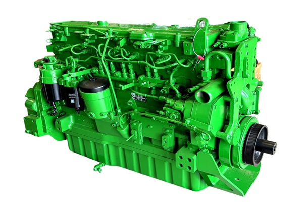
Motor elétrico
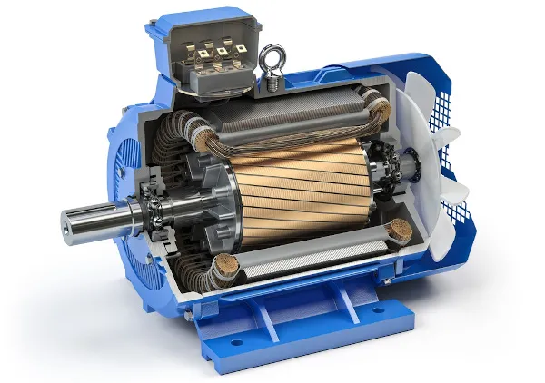
Motor híbrido: Que é um sistema que se utiliza de ambos os tipos de motores para gerar movimento
Quanto a combustão
Combustão externa (máquina a vapor)
Combustão interna
- De pistão (ciclo otto e diesel)
- Êmbolo rotativo (wankel)
Como ocorre a combustão
A combustão é uma reação química exotérmica (libera calor) entre uma substância (combustível) e um gás (comburente) para liberar calor.
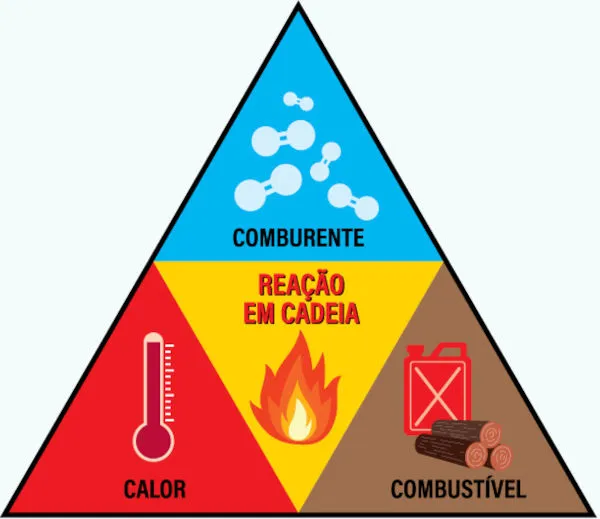
Como ocorre a combustão
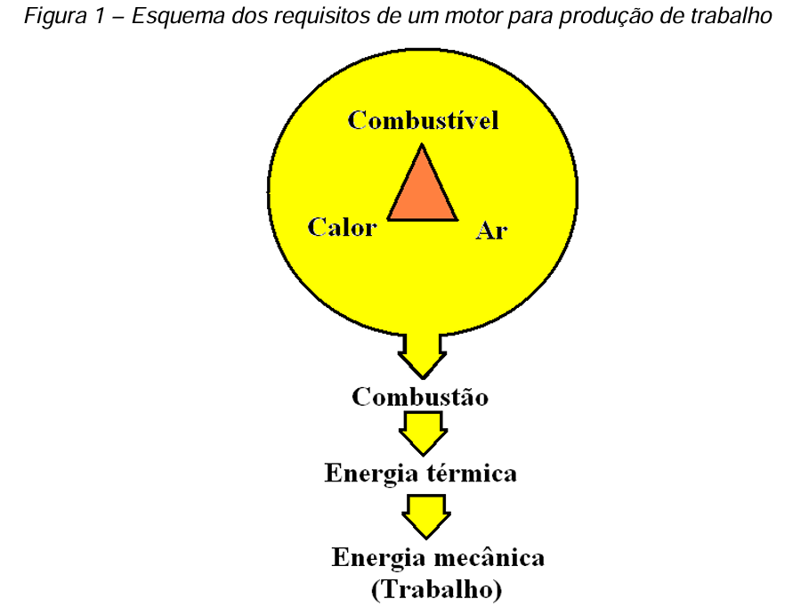
Como ocorre a combustão
Fórmula química da combustão
\[CH_{4} + 20_2 = CO_2 + 2H_{2}O + Calor\]
Gasolina = C8H18 (octano)
Diesel (estrutura complexa) = CH3(CH2)14CH3(C16H34) (cetano)
Combustão externa
Ex: máquinas a vapor
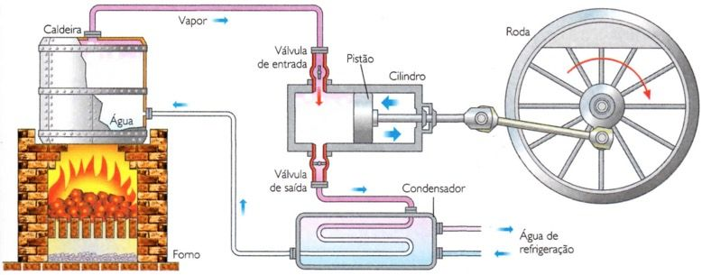
Quanto a combustão
Exemplo de máquina a vapor
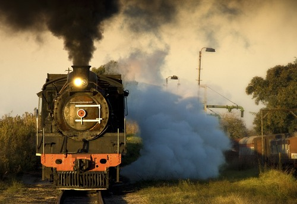
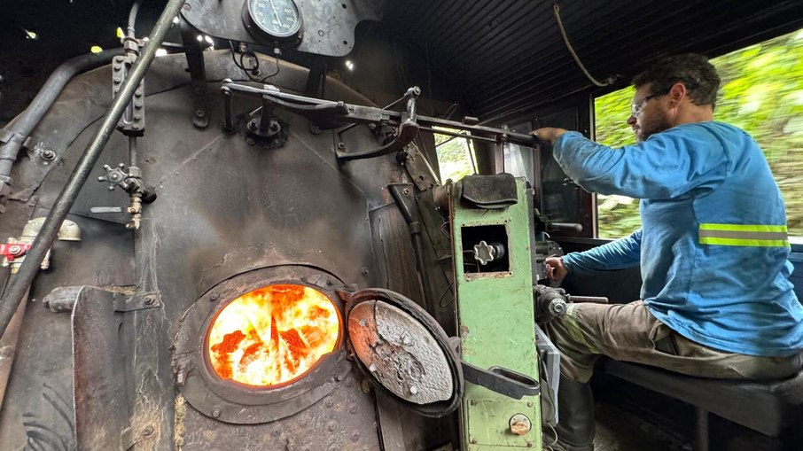
Combustão interna
Combustão interna
Ciclo Otto
Utilizam combustível de baixa volatilidade, como gasolina e álcool. Para ignição necessitam de centelha produzida pelo sistema elétrico.
Empregado em situações agrícolas com menor demanda de potência e torque.
Ciclo Diesel
Utilizam como combustível o óleo diesel. A inflamação do combustível injetado sob pressão na câmara de combustão ocorre pela compressão de ar e consequente elevação da temperatura.
Quanto ao número de ciclos
Motor de 4 tempos
Motor de 2 tempos
Objetivo do motor
Gerar trabalho!
\(Trabalho~(J) = Força(N) * deslocamento(m)\)
\(Força(N) = massa(kg) * aceleração(\Delta_v/\Delta_t)\)
Potência: Capacidade de transmitir energia por tempo.
- Realização de trabalho ou transmissão de calor.
Ex de potência: 1 cavalo puxa 75 kg em 1 s.
Histórico sobre motores
Histórico
Alphonse Beau de Rochas (França)
Publica e registra os termos teóricos de um “princípio” de um motor a 4 tempos com compressão prévia da mistura antes da ignição.
Exposição de Paris
Nikolaus August Otto apresenta um motor a combustão interna (4 tempos).
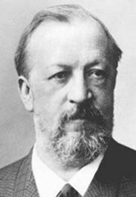
Motor a quatro tempos funcional de Otto
Otto e Deutz produzem o primeiro motor prático e confiável no ciclo de 4 tempo (admissão, compressão, combustão e escape).
O ciclo ficou conhecido como ciclo Otto
Queda da patente de Otto na Alemanha
O documento de Beau de Rocha é redescoberto, assim a patente de Otto é invalidada.
Várias fabricantes podem recriar o motor.
Dois tempos
Dugald Clerk patenteia um motor de 2 tempo com compressão estabelecendo uma alternativa ao ciclo Otto de 4 tempos.
Ciclo Otto em veículos
Ocorre a primeira aplicação do motor de ciclo Otto em veículos utilizando combustível a gasolina.
Ciclo Diesel
Engenheiro Rudolf Diesel descreve um novo motor, no qual a ignição da mistura ar mais combustível era feita por compressão (motor Diesel).
Ciclo Diesel
Primeiro motor ciclo diesel é construído.
Funcionamento do motor a combustão interna
Funcionamento do motor a combustão interna
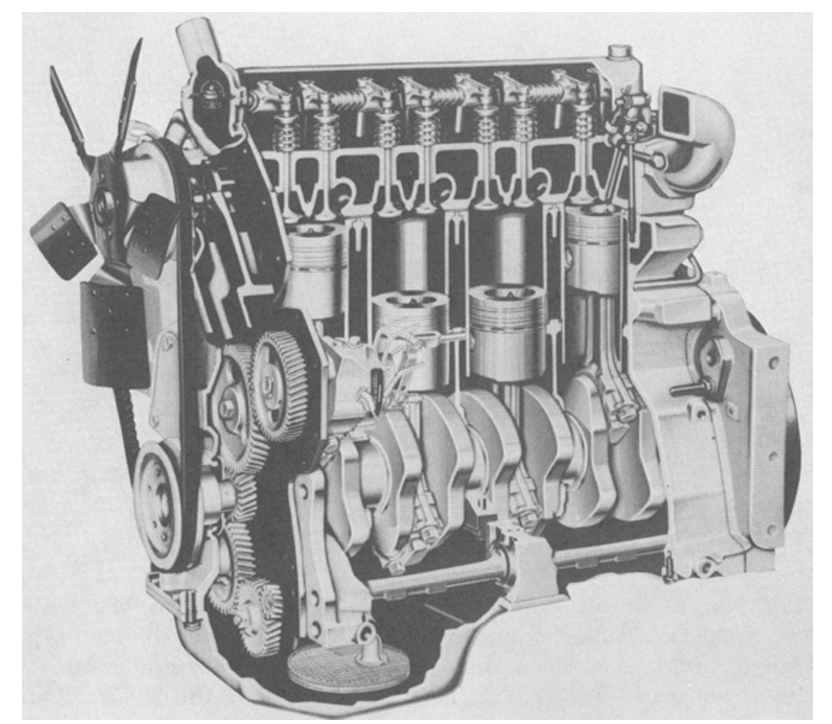
Funcionamento do motor a combustão interna
4 tempos ciclo diesel
- Admissão: O pistão desce, a válvula de admissão se abre e a de escape fecha. Ao descer, o pistão cria pressão no cilindro. O ar é forçado pela pressão atmosféria a entrar no cilindro pelo filtro de ar e pela tubulação de admissão. A quantidade que entra é sempre a mesma, independente da aceleração.
- Compressão: O pistão sobe, as válvulas de admissão e de escape ficam fechadas. O ar admitido é comprimido até ocupar o volume da câmara de combustão. O ar se aquece, e ao fim da compressão, o bico injetor pulveriza óleo diesel no interior da câmara de combustão.
Funcionamento do motor a combustão interna
4 tempos ciclo diesel
- Combustão: O pistão desce, acionado pela força de expansão dos gases queimados. As válvulas de admissão e de escape estão fechadas. A força de expansão é transmitida pelo pistão à biela e desta ao virabrequim, provocando assim movimento de rotação do motor.
- Escape: O pistão sobe, estando a válvula de escape aberta e a de admissão fechada. Os gases queimados são expulsos através da passagem dada pela válvula de escape.
Funcionamento do motor a combustão interna
Admissão
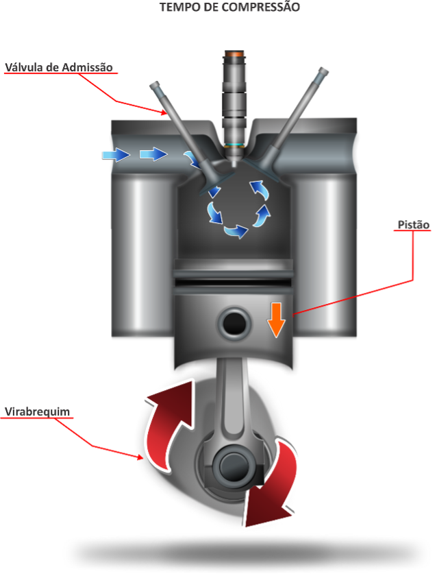
Funcionamento do motor a combustão interna
Compressão
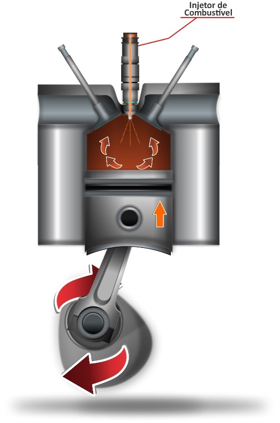
Funcionamento do motor a combustão interna
Explosão
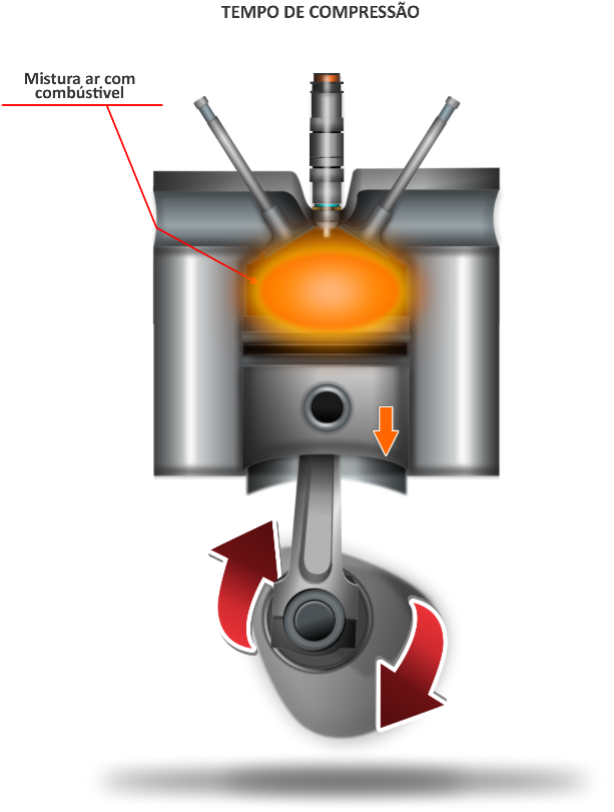
Funcionamento do motor a combustão interna
Descarga
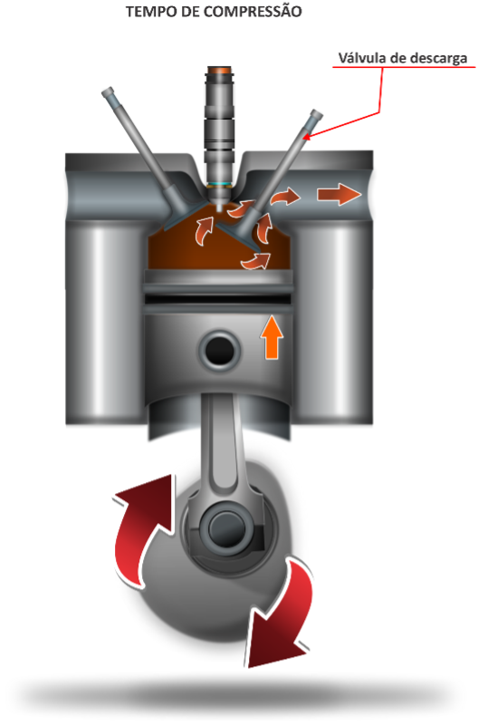
Funcionamento do motor a combustão interna
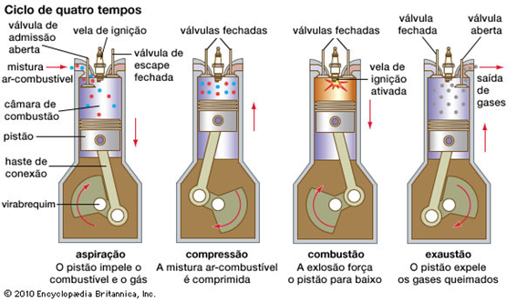
Funcionamento do motor a combustão interna
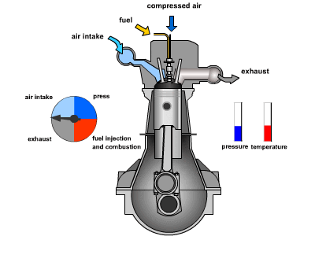
Funcionamento do motor a combustão interna
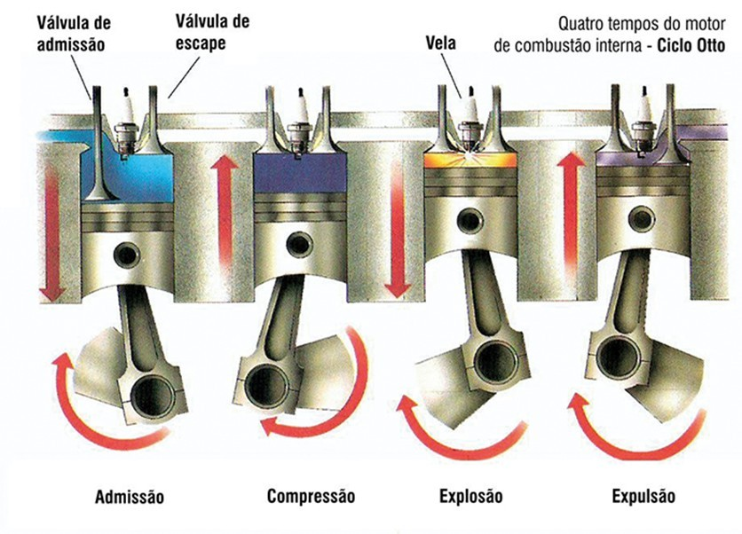
Funcionamento do motor a combustão interna
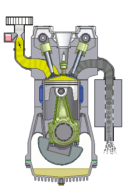
Funcionamento do motor a combustão interna
Componentes do motor
Componentes do motor
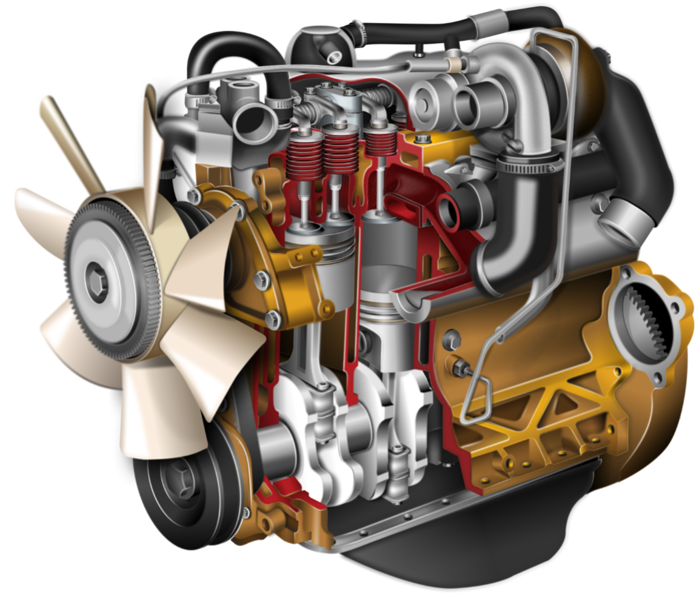
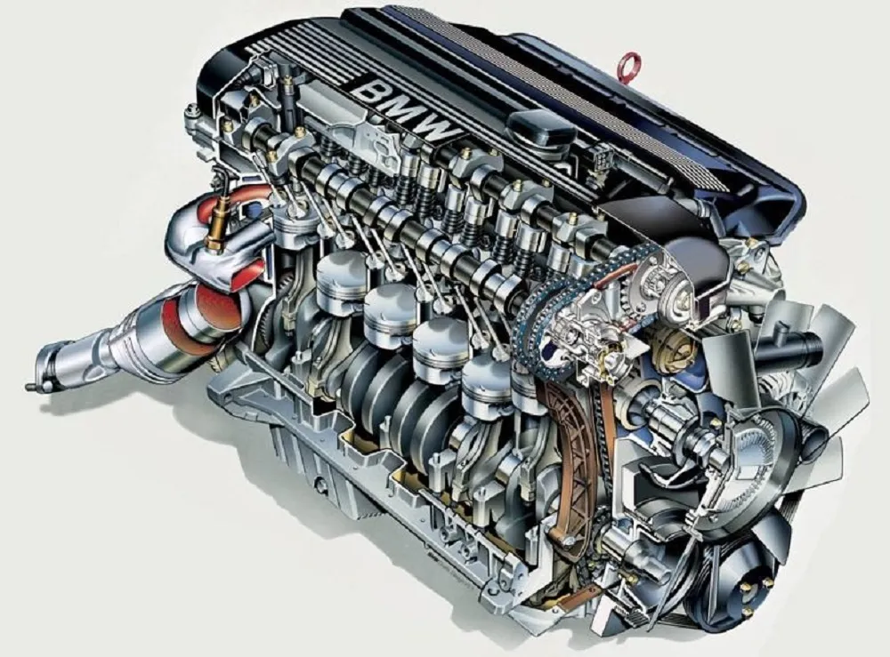
Componentes do motor diesel
Bloco dos cilindros
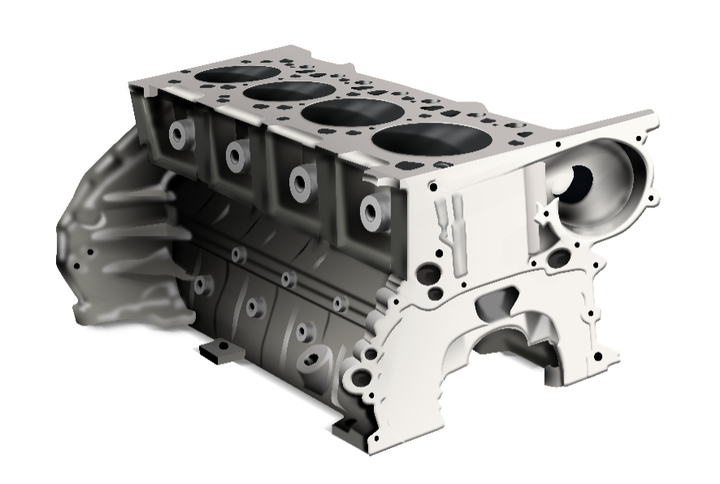
Componentes do motor diesel
Bloco dos cilindros
Função:
- Base onde se encontram todos os demais elementos do funcionamento do motor.
- Cabeçote, válvulas, árvore de comando, cilindros, pistão, aneís de segmento, biela, casquilhos, árvore de manivelas, volante e cárter.
- Em máquinas agrícolas apresenta função estrutural e de sustentação.
Componentes do motor diesel
Bloco dos cilindros
Características:
- Peça de fundição.
- Em seu interior apresenta grandes orifícios cilíndricos (cilindros) onde se realiza a combustão.
- Apresenta cavidades para a passagem de água de arrefecimento.
Componentes do motor diesel
Árvore de manivelas (virabrequim )
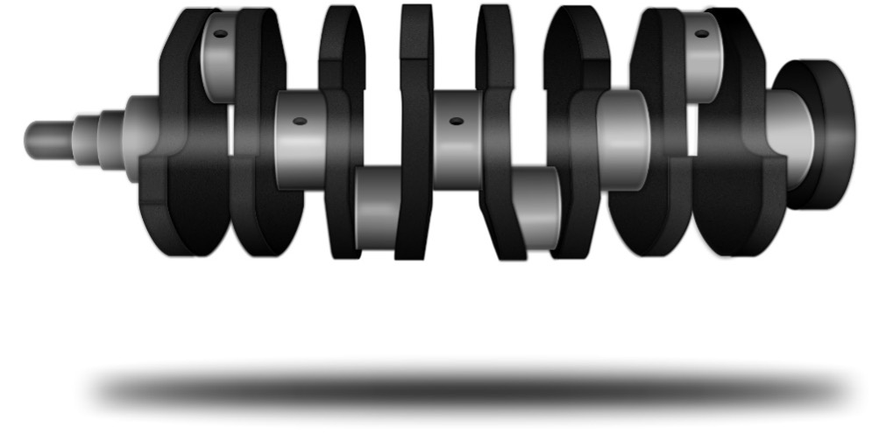
Componentes do motor diesel
Árvore de manivelas (virabrequim )
Função:
- Atua em conjunto com a biela como órgão transformador do movimento alternativo do pistão em movimento de rotação, transformando o trabalho realizado pelo pistão em torque.
Características:
- Peça de aço forjado com canais para conduzir o óleo lubrificante até os mancais e cabeças das bielas.
- Seu formato deriva do número e da distribuição dos cilindros (manivelas iguais ao número de cilindros).
Componentes do motor diesel
Biela e pistão
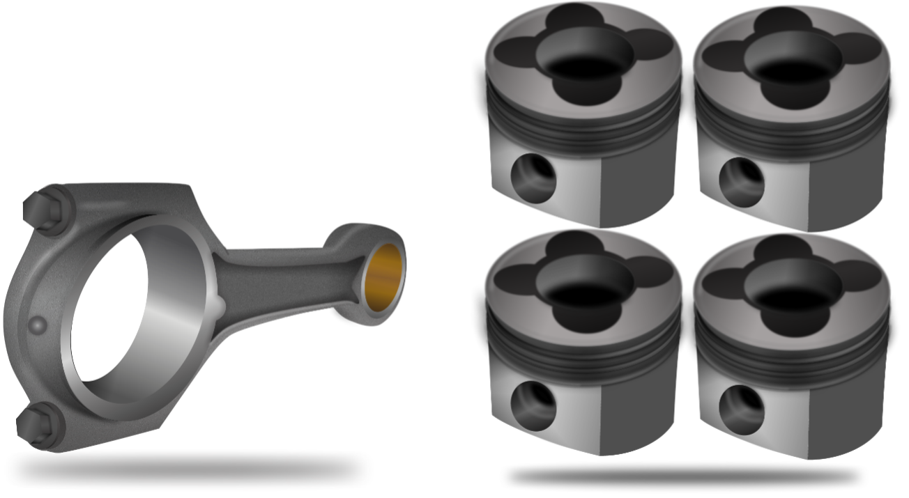
Componentes do motor diesel
Pistão
Função:
- Pistão é o órgão receptor do movimento de expansão dos gases resultantes da combustão. Primeiro componente a se movimentar.
- Responsável pela conversão da energia da combustão em trabalho mecânico.
- Trasfere a energia para o virabrequim.
Características:
- Peça cilíndrica localizada dentro do cilindro sem contato com o mesmo.
Componentes do motor diesel
Anéis do pistão
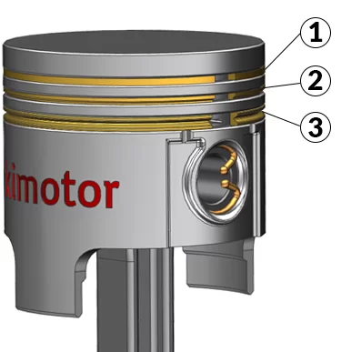
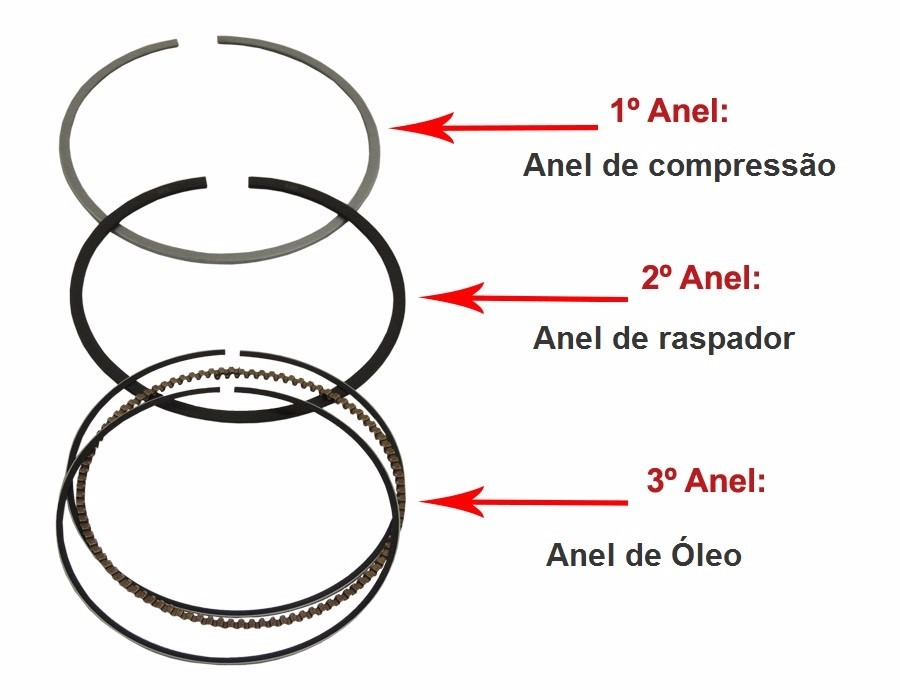
Componentes do motor diesel
Anéis do pistão
Função:
- Os de compressão são responsáveis pela vedação da câmara do cilindro (fechamento hermético)
- Os de lubrificação executam o controle do fluxo de óleo entre o pistão e o cilindro.
- Dissipação do calor do pistão pelas paredes do cilindro.
- Redução da área de contato direta entre as paredes do cilindro e do pistão.
Componentes do motor diesel
Biela
Função:
- É um órgão transformador do movimento alternativo do pistão em movimento de rotação no virabrequim.
- Elemento de ligação entre o pistão e o virabrequim.
Componentes do motor diesel
Biela
Características:
- Feita em aço, é resistente para poder transferir a energia entre as partes.
- Possui 3 partes
- Cabeça: Orifício circular que permite ligação com o virabrequim.
- Corpo: Faz a ligação entre o pé e a cabeça.
- Pé: Orifício circular que permite ligação com o pistão.
Componentes do motor diesel
Cárter de óleo
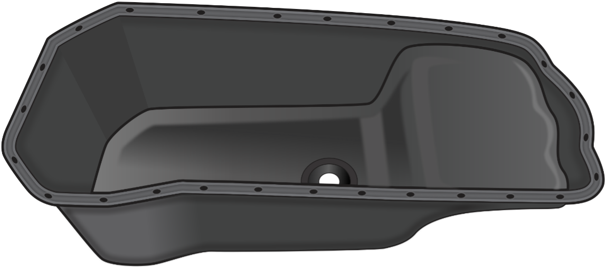
Componentes do motor diesel
Cárter de óleo
Função:
- Depósito para o óleo lubrificante do motor.
- Assegura a lubrificação do motor.
- Reservatório do óleo de lubrificação e de eventuais detritos não retido pelos filtros.
Características:
- Invólucro rígido que fecha o bloco em sua parte inferior.
Componentes do motor diesel
Volante do motor
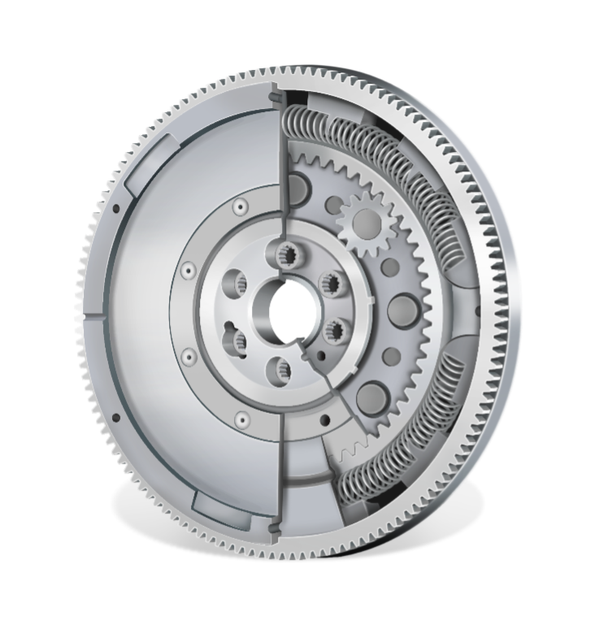
Componentes do motor diesel
Volante do motor
Função:
- Transfere o torque obtido no virabrequim para a caixa de velocidades.
- É responsável por absorver vibrações do motor e manter estável ou dificultar oscilações.
Componentes do motor diesel
Válvulas
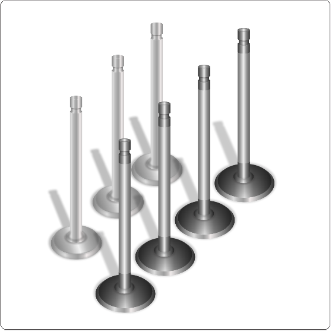
Componentes do motor diesel
Cabeçote
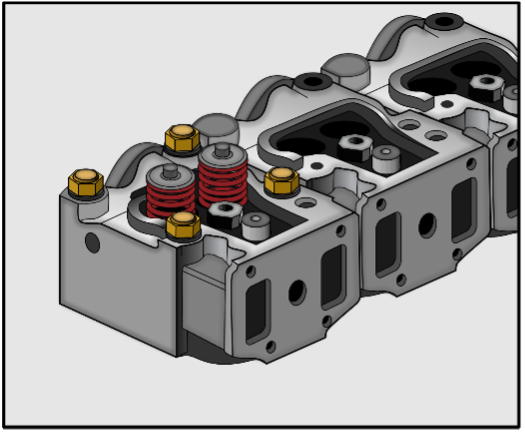
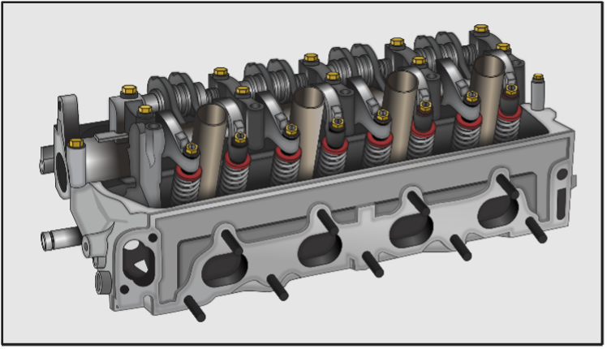
Componentes do motor diesel
Cabeçote
Função:
- Funciona como tampão para os cilindros e acomoda os mecanismos das válvulas de admissão e escape, bico injetor e canais de circulação do líquido de arrefecimento e lubrificação.
Componentes do motor diesel
Junta do Cabeçote
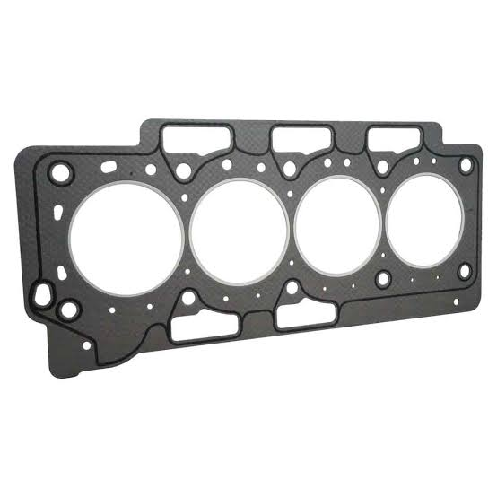
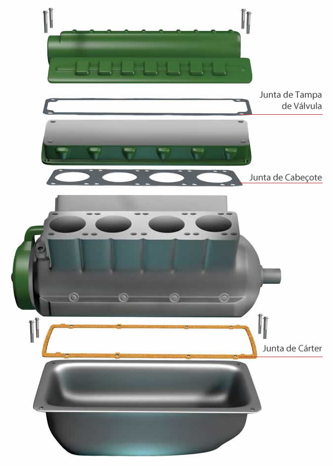
Componentes do motor diesel
Junta do Cabeçote
Função:
- Atua na vedação entre o bloco do motor e o cabeçote.
- Evita a mistura de óleo, líquido de arrefecimento e gases de combustão.
Características:
- Resistentes a altas temperaturas e pressões.
- Formada por um empilhamento de camadas de aço com revestimento especial.
Componentes do motor diesel
Junta do Cabeçote
Quando a junta perde a vedação, toda a circulação de líquido de arrefecimento pode ser comprometida.
- Motor aquece mais que o normal.
- Fumaça branca no escapamento (indica mistura de líquido de arrefecimento na câmara de combustão).
- Vazamento de óleo e água (mudança no aspecto do óleo).
- Perda de potência.
- Falhas no motor.
Componentes do motor diesel
Comando de válvulas
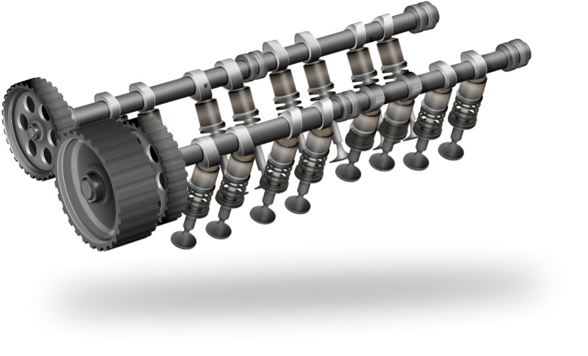
Motor completo
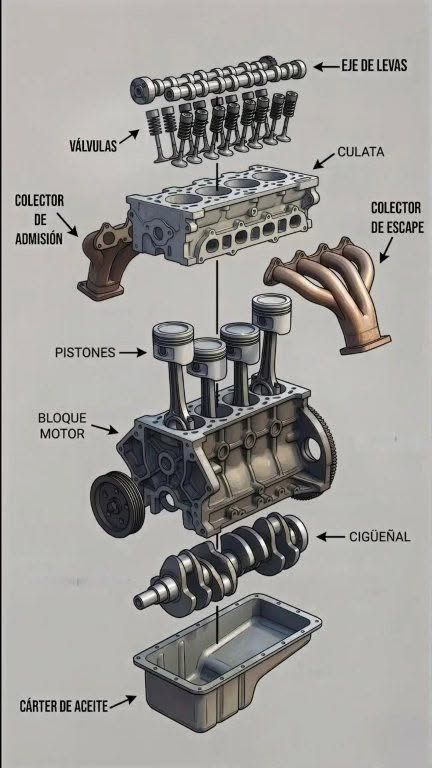
Componentes do motor diesel
Camisa do cilindro
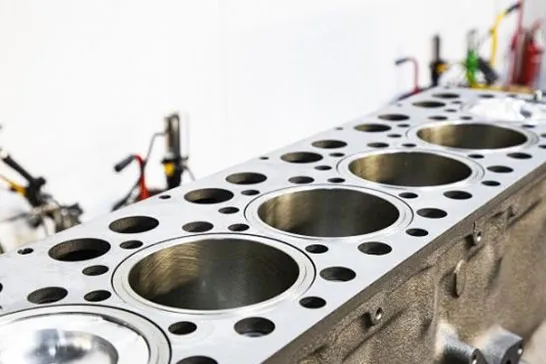
Componentes do motor diesel
Camisa do cilindro
Função:
- Evitar desgaste do bloco pelo atrico entre pistão e bloco.
- Fornecer proteção para outros componentes de interior.
Características:
- Resistentes a altas temperaturas e pressões.
- Podem ser úmidas ou secas (em contato ou não com líquido de arrefecimento).
Componente do motor diesel
Camisa do cilindro
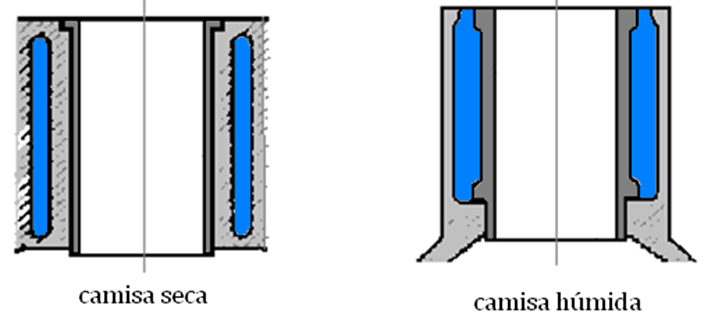
Componente do motor diesel
Casquilhos ou bronzinas
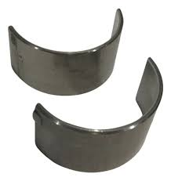
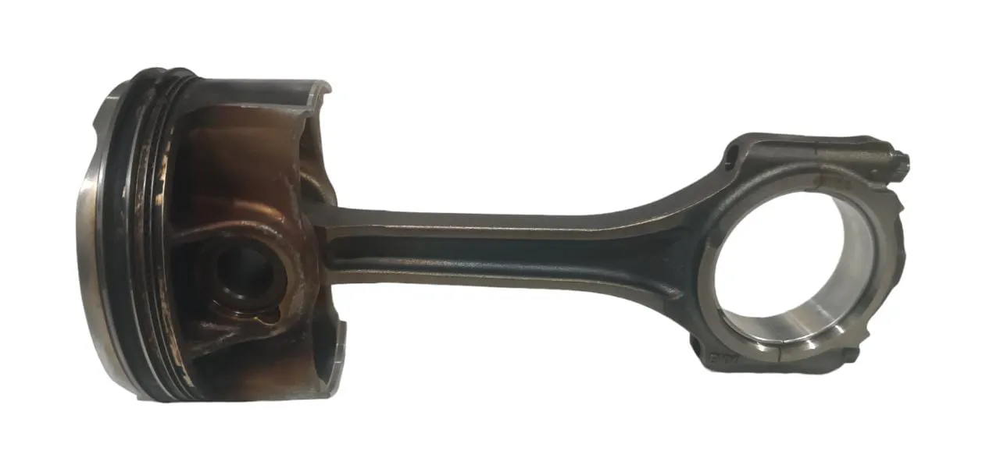
Componente do motor diesel
Casquilhos ou bronzinas
Função:
- Reduzir atrito e desgaste entre os elementos.
- Auxiliam no correto alinhamento do virabrequim e comando de válculas no bloco.
Características:
- Entregada entre biela e virabrequim, pino e êmbolo, etc.
Arranjo dos cilindros
Arranjo dos cilindros
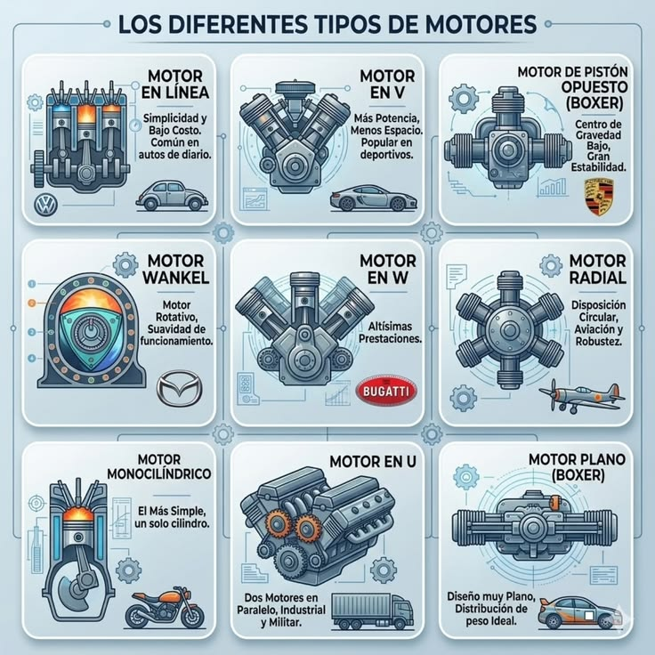
O que é Cilindrada?
O que é Cilindrada?
O que significa falar que o motor é 2.0?
O que é um carro 1000?
Cálculo da cilindrada
\[V = \frac{\pi * D^2 * h}{4}* n \]
\(V = cilindrada~(cm^3, litro, pol^3)\)
\(D = diâmetro~do~pistão~(cm, pol)\)
\(h = curso~do~pistão~do~PMI~ao~PMS~(cm, pol)\)
\(n = número~de~cilindros\)
Cálculo da cilindrada
Ex: Um motor de 3 cilindros, com diâmetro dos cilindros de 10 cm e curso do êmbolo de 120 mm, qual a sua cilindrada?
\[V = \frac{3.14 * 10^2*12}{4}*3 = 28274~cm^3\]
Ex: Um motor de 4 cilindros, com diâmetro dos cilindros de 5 cm e curso do êmbolo de 5 cm, qual a sua cilindrada?
PMS e PMI
- PMS: Ponto morto superior.
- PMI: Ponto morto inferior.
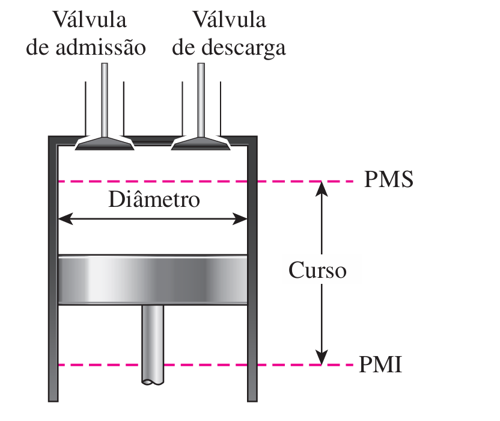
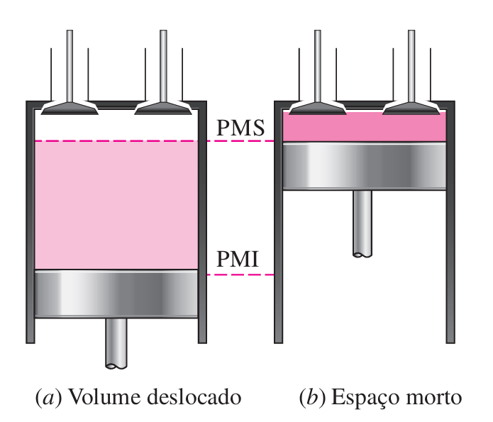
Ciclo Otto ideal
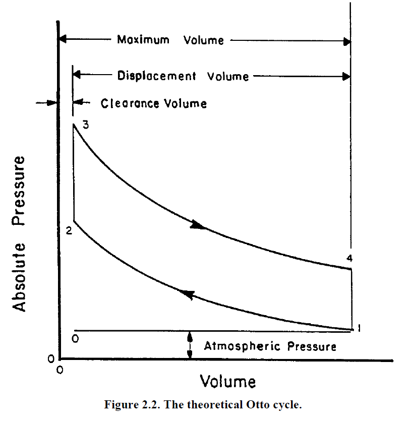
Ciclo Otto ideal
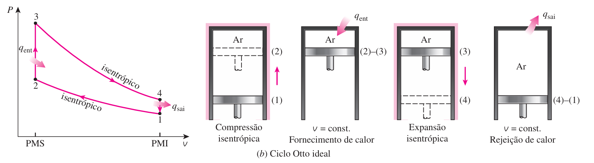
Ciclo Otto real
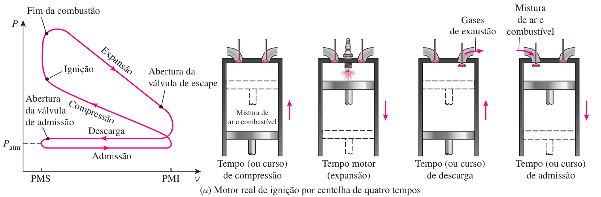
Ciclo Termodinâmico
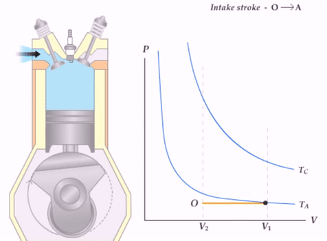
PMS e PMI
A relação entre o volume máximo formado no cilindro e o volume mínimo (morto) é chamada de razão de compressão (r) do motor.
\[r = \frac{V_{max}}{V_{min}} = \frac{V_{PMI}}{V_{PMS}}\]
Eficiência do motor Otto
A eficiência térmica do motor Otto pode ser expressa como:
\[\eta_{t,Otto}=1-\frac{1}{r^{k-1}}\]
\(\eta_{t,Otto}= eficiência~térmica\)
\(r = razão~de~compressão\)
\(k=razão~dos~calores~específicos\)
Eficiência do motor Otto
Um motor de ciclo Otto de quatro cilindros possui diâmetro do cilindro de \(90\ \text{mm}\), curso do pistão de \(100\ \text{mm}\) e volume de folga (volume morto) de \(106.024~cm^3\) por cilindro. (assuma, k = 1.4) Calcule:
- O deslocamento volumétrico total do motor (CC);
- A taxa de compressão;
- A eficiência térmica teórica do ciclo Otto.
Eficiência do motor Otto
Um motor de ciclo Otto de quatro cilindros possui diâmetro do cilindro de \(90\ \text{mm}\), curso do pistão de \(100\ \text{mm}\) e volume de folga (volume morto) de \(106.024~cm^3\) por cilindro. (assuma, k = 1.4) Calcule:
- O deslocamento volumétrico total do motor (CC);
\(V = \frac{\pi * 9^2 * 10}{4} * 4 = 2544~cm^3 = 2.5 CC\)
Eficiência do motor Otto
Um motor de ciclo Otto de quatro cilindros possui diâmetro do cilindro de \(90\ \text{mm}\), curso do pistão de \(100\ \text{mm}\) e volume de folga (volume morto) de \(106.024~cm^3\) por cilindro. (assuma, k = 1.4) Calcule:
- A taxa de compressão;
\(V_{cilindro}=\frac{2544.69}{4}= 636~cm^3\)
\(V_{max}= 636+106 = 742~cm^3\)
\(V_{min} = 106~cm^3\)
\[r=\frac{742}{106}=7\]
Eficiência do motor Otto
Um motor de ciclo Otto de quatro cilindros possui diâmetro do cilindro de \(90\ \text{mm}\), curso do pistão de \(100\ \text{mm}\) e volume de folga (volume morto) de \(106.024~cm^3\) por cilindro. (assuma, k = 1.4) Calcule:
- A eficiência térmica teórica do ciclo Otto.
\[\eta_{t,Otto}=1-\frac{1}{7^{(1.4-1)}}=0.54 = 54\% \]
Eficiência do motor Otto
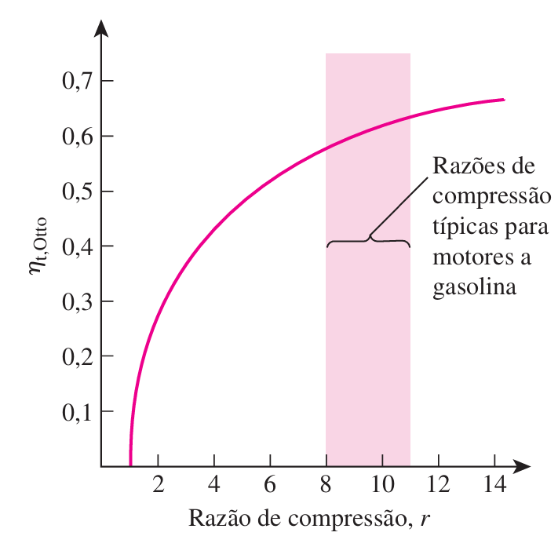
Ciclo diesel ideal
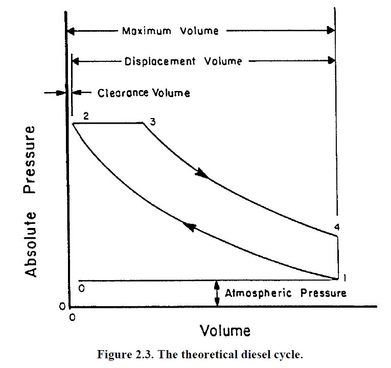
Eficiência Ciclo diesel
\[\eta_{t,Diesel}=1-\frac{1}{r^{k-1}}*[\frac{r_{c}^k-1}{k(r_{c}-1)}] \]
\(r = razão~de~compressão\)
\(r_c= razão~de~corte\)
\(k = razão~dos~calores~específicos\)
Eficiência Ciclo diesel
Razão de corte
\[r_c = \frac{v_3}{v_2}\]
\(v_3 = volume~cilindro~após~combustão\)
\(v_2 = volume~cilindro~antes~combustão\)
Eficiência Otto vs Diesel
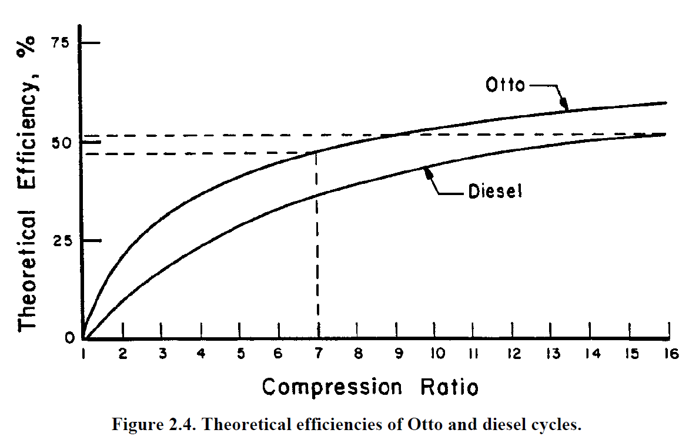
- Diferentes taxas de compressão
Diferenças entre Otto e Diesel
Forma do pistão
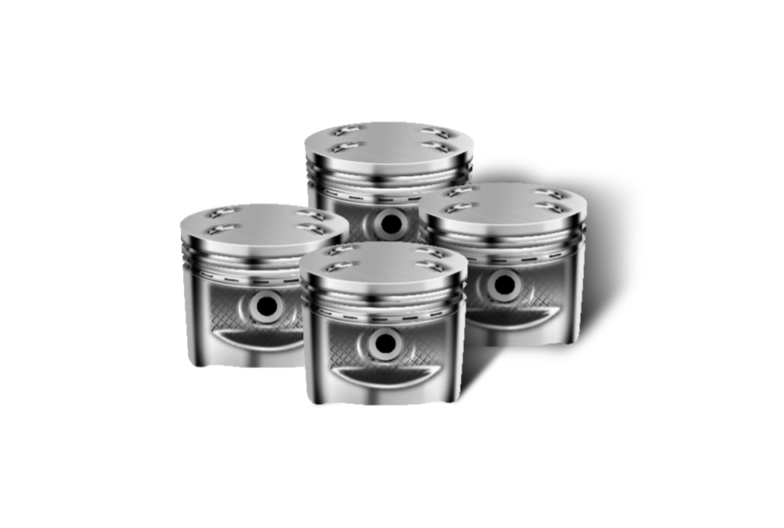
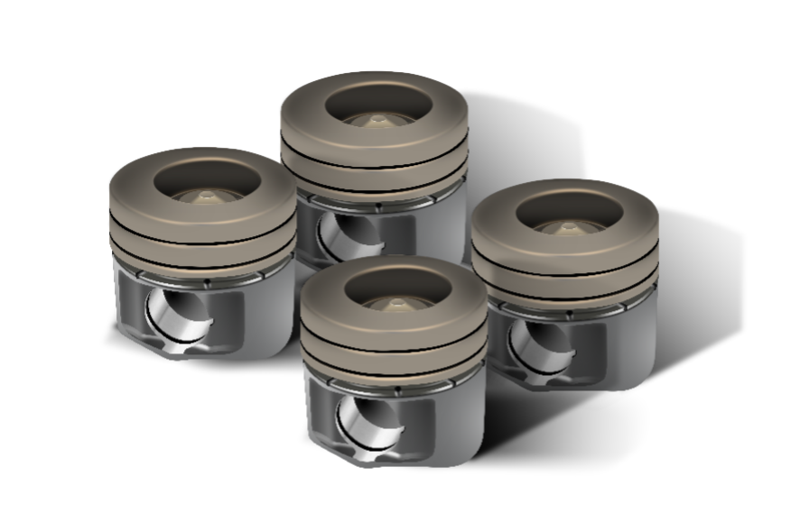
Diferenças entre Otto e Diesel
Ignição via vela
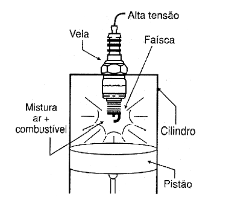
Diferenças entre Otto e Diesel
| Parâmetro | Ciclo Otto | Ciclo Diesel |
|---|---|---|
| Combustível | Gasolina, Etanol, Metanol, GLP | Óleo Diesel, Biodiesel |
| Condição termodinâmica do ciclo principal | Adição de calor a volume constante | Adição de calor a pressão constante |
| Fase de admissão | Admite mistura de ar e combustível | Admite apenas ar |
| Relação ar/combustível | Pouco variável | Muito variável |
| Controle de carga | Variando a quantidade de mistura | Variando a quantidade de combustível |
Diferenças entre Otto e Diesel
| Parâmetro | Ciclo Otto | Ciclo Diesel |
|---|---|---|
| Taxa de compressão | 6–10:1 | 16–20:1 |
| Pressão mínima de compressão (kPa) | 1400 | 3240 |
| Forma de ignição | Centelha elétrica | Autoignição |
| Rotação | Motores leves; combustão homogênea; altas rotações | Motores pesados; combustão heterogênea; baixas rotações |
| Rotação de potência máxima | > 5000 rpm | < 3000 rpm |
| Rendimento térmico | 25–30% | 30–35% |
Motor 2 tempos
Motor 2 tempos
Qual a diferença para o motor 4 tempo?
São motores que em apenas 2 cursos do pistão executam os 4 tempos.
Em apenas um giro do virabrequim eles realizam todo o ciclo termodinâmico do motor.
Motor 2 tempos
Curso 1: admissão e compressão
Curso 2: combustão e exaustão
Motor 2 tempos
Motor 2 tempos
Equipamentos com motor 2 tempos:
- Motosserras;
- Roçadoras;
- Motores estacionários;
- Monocultivatores;
Motor 2 tempos
2 x 4 tempos
Motor 2 tempos
Diferenças
Não emprega válvulas para admissão e exaustão (usa-se janelas).
- O pistão trabalha como “válvula”.
Não é necessário cabeçote.
Cárter não tem função de armazenamento de lubrificante.
- Óleo lubrificante é adicionado com o combustível.
- Vida útil menor que motor 4 tempo.
- Permite o uso em qualquer orientação.
Mais poluente.
Motor Wankel
Motor Wankel

- Mais poluente.
Motor de uso agrícola
Motor de uso agrícola
Ambiente de trabalho.
Força e modo de operação.
Fim!